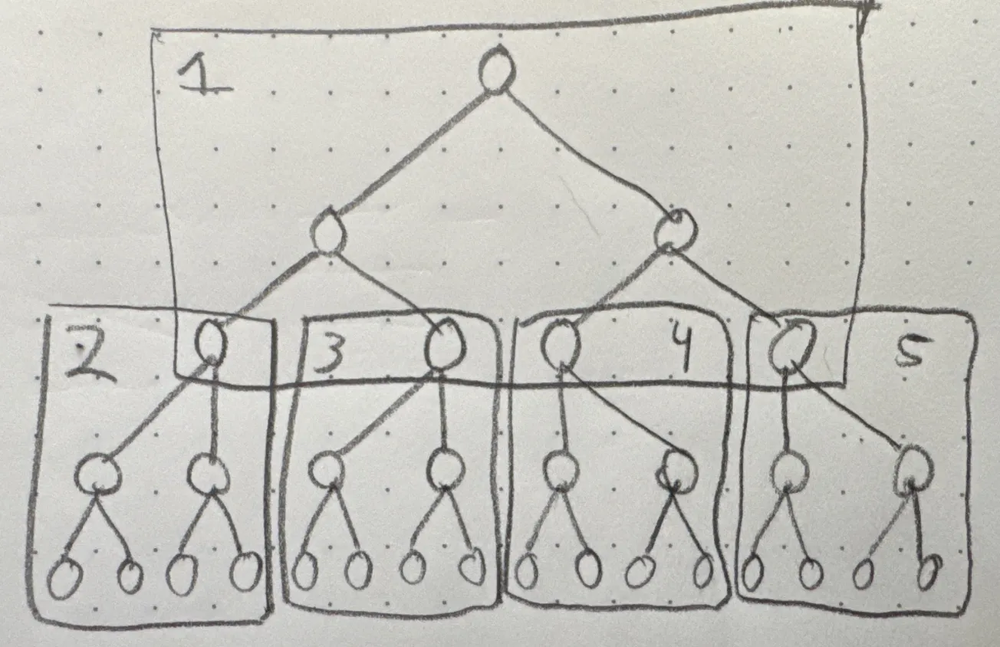
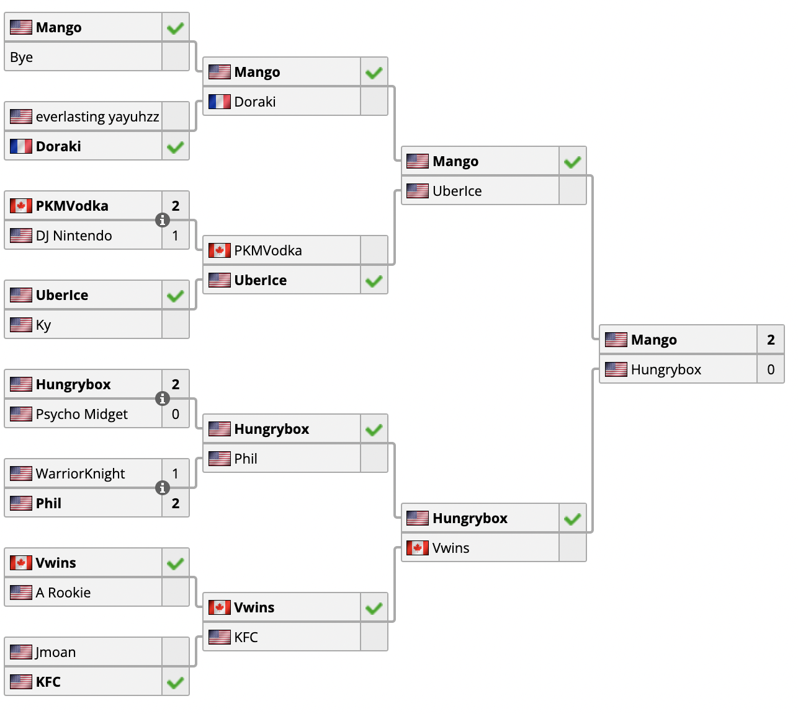
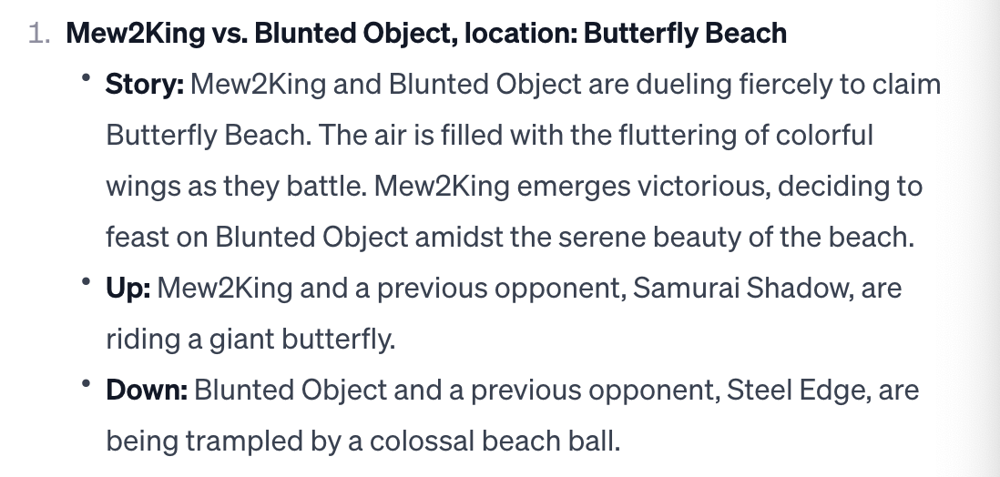
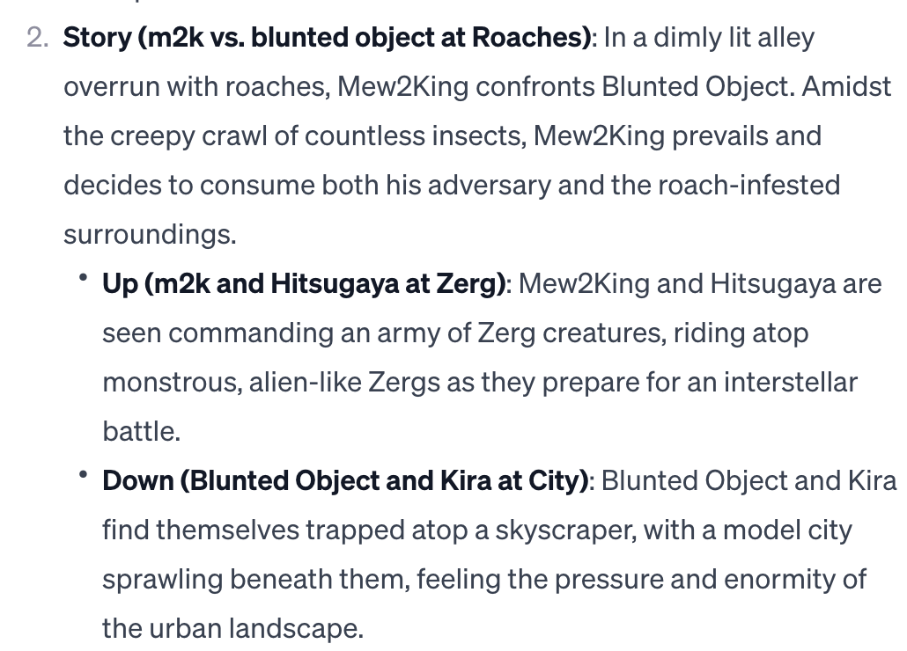

Advanced Memory Palaces
Table of Contents
Memorizing a Double Elimination Tournament
I recently read Joe Reddington's Advanced Memory Palaces. I thought this was a really thought provoking read – as a machine learning researcher by trade and a relatively beginner memorist, it was nice to see some intersection between concepts I think about every day with concepts I have been thinking about a lot lately.
To jump to the good part:
Context
On the back of this book, there is a paragraph which leads with the following:
This should be the second book you read on memory techniques. It doesn't matter which other book you read first, but you'll find it easier if you've had some practice of both using memory techniques well and discovering their limitations.
Before reading this book, I had read Joshua Foer's Moonwalking with Einstein, Jerry Lucas & Harry Lorayne's The Memory Book, and Lynne Kelly's Memory Craft. For better or worse, I'd consider all of these books to be aimed at the layperson with no experience doing this sort of thing before. In comparison, this book is explicitly about avoiding some of the more annoying components of actually using these techniques: how to fit more items in a single location, how to organize the flow of information, and all sorts of engineering-type concerns which are notably absent in other books on the topic1.
Likewise, the book seemed to be about making analogies between data structures and mnemonics, which is a topic I had been doing in unscripted rants to my computer-knowing friends for the last several weeks. For all intents and purposes, I seemed like the ideal target for this specific book, and so I purchased it.
What really got me engaged was the back half of this book, which is an experimental look at using uncommon data structures for memorizing types of data uncommon to find in memory competitions2. The most interesting to me was the section on tree-shaped data: I deal with this sort of data all the time!
GENESIS 1
I often joke with my friends that GENESIS is my favorite movie. I'll often put on the playlist of recorded sets from that tournament and watch the story of Armada's journey, and his cinematic clash with America's champion in grand finals. Off the top of my head, I can probably remember a good handful of the most important things about this tournament: Scar's run to winners top 8, Armada's path starting from Lunin, Mango's path starting from Hungrybox, and maybe a few other really important sets like Axe vs Jman. There may be some more big ones I can remember if you really press me on it, but it's mostly winners bracket recorded sets.
I am going to attempt to memorize the entire bracket phase of this tournament. After several rounds of pools, the surviving players were dumped into a double-elimination bracket starting from the round of 1283. Double elimination is not a very common format in most competitions4, so I'll need to make some adaptations to what is in the book.
An Array of Pointers
One thing I was surprised to not see discussed in this book were pointers, which are objects which serve as maps which reference locations in memory, rather than values themselves. Locations are our whole thing, as memory technique people! It was really daunting to remember such a large list of events, but one modification I made was to remember blocks of the bracket, and store those blocks in an array5.
The way that I tackled memorizing the winners bracket of such a large, tree-like structure of information was to use something similar in spirit to the skip list segment of this book: rather than "raw" memorizing a full Ro128 bracket, I would remember a much smaller tree where each node has 8 children, and each node's value is a "root" match which spreads out three more rounds to a local "round of 16". Here's a crude simplified drawing which does this to four leaf nodes rather than 86.

Class Structure
class BracketMatch():
def __init__(self, location, upper, lower, winner,
u_prev, l_prev):
self.story = f"{upper} and {lower} are fighting because they want to eat {location}.\
{winner} wins their fight and decides to eat {loser} along with {location}."
self.up = f"{upper} and {u_prev} are riding on {Related(location)}"
self.down = f"{lower} and {l_prev} are being ridden on by {Related(location)}"
It's a little precarious, since we don't keep track of which of upper and uprev is the higher seed in the class structure. Since that is handled in the next link, I should hopefully be able to keep track of everything except for the very lowest children. As long as I get all the matches and their winners correct, hopefully that still counts as a correct answer.
Likewise, an interesting aspect here is that the use of a "related" function: as long as the location is memorable, we can synthesize similar arbitrary "locations" (e.g. Pidgey -> Toucan Sam, Pidgey -> Big Bird). I would be worried about the links being harmed by overly similar locations and preventing my access to the full list, but since I'm using the skip-tree I only need to remember a "link" of 15 per location, it shouldn't be so bad in theory. I'm not going to write these all out here for the entire bracket, but I'll include the links for one "location block" in the footnotes for those curious about how this looks, with lower detail as it gets closer to the leaf nodes.7 , 8 , 9 , 10 , 11 , 12 , 13 , 14 , 15 , 16 , 17 , 18 , 19 , 20 , 21

Thoughts on "More Fun" Memory Contests
The more I do this sort of thing, the more I think it's no fun to just bring an a priori system into a competition to remember one particular type of thing very well. All of the really interesting stuff I read about mnemonics is about people who design clever systems to remember weird stuff; as fun as memorizing cards is, I think it would be really interesting to hold a competition where you don't know ahead of time what events you will be doing.
This whole exercise being vaguely different, yet fundamentally similar to more traditional events like numbers or random words really makes me think that the memory sports scene is being really held back by pigeonholing itself into specialized list-memory. It would be really cool to arrive at one of these contests and to on-the-fly have to come up with memory systems to remember Rubik's Cube Last Layer Algorithms, Round 3 Pools of Tekken EVO 2023, and a random set of Sorabji's 100 Transcendental Studies for Piano22. I feel like we would learn so much about memory if we used this sort of wacky format, rather than tunnelling on increasingly large systems for 3- and 4-digit number pegs. I think it would do a lot of good in making the sport feel more "useful", and it would be super interesting to talk to the winners and figure out what sorts of things they came up with.
Unsorted notes
The two types of links: natural links (strong) artificial links (fade)
Use wikipedia pages for numbers
redundancy, over time the details in your image will deteriorate. There's two ways claimed to prevent total loss: adding more vivid details (colors, noises, scents), and adding redundant links (e.g. instead of just "dinosaur" and "goblin", also make the dinosaur "gobbling up" something, so there's two links between the images in case one of them breaks.
Major encoder app is a cool idea but the links are broken and if I was going to clone the repo I would just code it myself
When doing links don't fall into the trap of saying the words in the order through some sort of story, each image needs to really directly involve the two adjacent things.
directionality in links is important (teapot -> godzilla -> cheese) if godzilla destroys the teapot then godzilla can't do something to cheese, cheese has to do something to godzilla otherwise the directions will be confusing
Remembering the start of a linked list is really critical
skip list data structure: like a linked list but with an additional next which goes n spots forward rather than just one, similar functionality to making every 5 locations memorable in a memory palace
Unknown and M. Bison, huh, fgc players.
Array: two lists where the target list is linked to by at least one element of the source list, where the source list is ordered. Usually this is the list of integers, in computers, but we can use locations, letter pairs, first-letter-mnemonics, etc.
Key rule: never link one word with two others, or you will mix up what the links refer to. If you want to do this, you can create a class where you refer to info type A (e.g. name) with image part A (e.g. face) and info type B (e.g. job) with image part B (e.g. hands). This requires some more planning, and should be done when you want to memorize a lot of info with a similar structure.
Polymorphism: you want your parentclass._init_(self) -> link, as well as your new types. Put another way, you just have <class> -> image, rather than like invention -> image, etc.
Memory Feat for review: Memorize and Recite GENESIS 1 top 128 bracket both winners and losers
Each block of 16 has 15 items in it (x8 = 120), plus 8 for winners + grands do the end (128 sets in winners) plus 112 matches in the losers bracket. It makes sense to memorize this backwards for winners and forwards for losers (to help with placing players in the losers bracket progression rather than just having them appear from thin air.
Tree-to-Tree Array
Appendix A: Mini-Experiment LLM-Augmented Links
The nice thing about formalizing a class structure, as recommended in this particular book, is that all of the stories follow a very simple natural language template, and there's a simple "related object" task associated with it. As such, I thought it seemed likely that an LLM like chatGPT could pretty quickly generate stories in the format associated with a class format. Since you input most of the "structure" by making the template, the task for each pair is mostly just imputing the details and coming up with related words.
GPT-4 is not good enough to understand something this convoluted zero-shot; the task of coming up with related words, propagating them to earlier bracket matches, and repeating this process is a lot of variable-shuffling to keep track of. Very quickly, it starts making up new players.

As a result, I needed to come up with the list of keywords to use the template myself, like this:
- m2k, kage, blunted object, lovage, butterfly beach (winner: m2k)
- m2k, blunted object, hitsuyaga, kira, roaches (winner: m2k)
- kage, lovage, bladewise, hax, big beach ball (winner: kage)
- m2k, hitsugaya, bye, connor, zerg (winner: m2k)
- kira, blunted object, alukard, falcomist, city (winner: blunted object)
- bladewise, kage, festizzo, choknater, the sun (winner: kage)
- hax, lovage, eggz, darksonic, volleyball (winner: lovage)
- m2k, bye, protoss (winner: m2k)
- hitsugaya, connor, terran (winner: hitsugaya)
- kira, alukard, skyscraper (winner: kira)
- falcomist, blunted object, subway (winner: blunted object)
- bladewise, festizzo, the moon (winner: bladewise)
- kage, choknater, mars (winner: kage)
- hax, eggz, baseball (winner: hax)
- darksonic, lovage, brazil (winner: lovage)
After this point, it started to almost-work. I think with a less convoluted setup, it would work okay, but with so many key words it started to struggle with making sure "up" was riding and "down" was being ridden, and other such nuances. I maintain this would probably work okay for normal memory palace stuff, and I might revisit it in the future. However, for this particular project it's probably quicker to just use images I think of myself.

Footnotes:
Namely, a lot of these books are written in a way which genuinely seems to suggest they are teaching you some sort of arcane, magical power. They are extremely powerful, to be sure! But this book can be relatively frank about it's cynicism for using these strategies for remembering specific classes of information, something The Memory Book certainly would never dare to do.
Put another way, this book makes an implicit argument that this is because techniques for them are not developed, and that memory competitions are competitions about using the techniques and not competitions about memorizing things.
There were actually 126 players and two byes, because 2009 was before smashers discovered how powers of 2 worked.
A double elimination tournament in a sport seems like a good way to get yourself injured as fast as possible.
I'm sure the term for this is chunking in a memory palace, but using the terminology presented in the book is kind of fun.
There's two purposes here: first, that I don't want to use hundreds of locations on this little stunt testing tree-data mnemonics. Second, I want to relatively quickly keep track of specific players' runs somewhat close to on command, which would just be too annoying to do if I did this entirely from links.
Mango vs Hungrybox, location: Doduo. Mango and Hbox starving on an island, and there's a big tasty looking Doduo running away from them in a panic, making it's trademark squawking noises. I'm sure roasted Doduo tastes just like chicken, but Mango eats Hungrybox Raw out of rage. Pointers: Mango riding on top of toucan sam, his legs off to the side riding his big colorful bill like he's an anime schoolgirl, and he's holding a gigantic smirnoff ice. Hungrybox is bring letting a three headed hydra ride on his back. He is getting crushed by the weight, but he tries to hold up the V for victory sign to make everyone think he's doing okay.
Mango Uberice, location: Toucan Sam. Mango is hunting for some toucans to eat. He catches toucan sam, who begs to be spared, but Mango cuts his head off. Mango cooks the toucan meat with smirnoff ice, using it like wine in a sauce. It tastes disgusting, so Mango drinks the rest of the smirnoff ice by itself. Pointers: Mango carrying a Doriyaki, heroically riding upon the bee mascot for Honey Nut Cheerios. The wacky cinnamon toast crunch mascots are riding upon a rocket where the thrusters are a bottle of vodka and a bottle of smirnoff ice.
Hungrybox Vwins, location: Three-headed hydra. Hungrybox is fighting the "victory twins", two cartoonish superheroes with "V" on their chests. Hungrybox has his back to the wall, but clutches it out by releasing the three headed hydra, killing both of them at once, devouring their heads like saturn devouring his own children. The weakened hydra is easy pickings for the mighty clutchbox, who makes a delicious hydra stew from it. Pointers: Hungrybox and Phil are riding godzilla, phil is cracking jokes about razing the city and hungrybox is awkwardly trying to follow along. King Arthur is riding upon the victory twins's shoulders, who can only carry his heavy armor because they are powered up by KFC fried chicken.
Mango Doraki, location: Honey Nut Cheerios. Mango wants to eat a Dorayaki, but it's not sweet enough, so he wants to put honey on it. He doesn't know what honey is, so he just tries to squeeze bee juice onto it thinking it's honey. Doraki -> Dorayaki. Pointers: Mango riding Jerry Seinfeld's shoulders as he delivers lines for the Bee Movie, Beekeeper in his suit riding a Doriyaki on his way to work.
PKMVodka Uberice, location: Cinnamon Toast Crunch. Vodka + Smirnoff Ice. Pointers: Doing The Cinnamon Challenge after chugging a fifth of vodka, Captain Crunch dramatically standing upon a smirnoff ice like an anime character on a light post.
Hungrybox Phil, location: godzilla. Press one, episode 2, this time on top of Godzilla as he destroys the city. Hungrybox artfully dodges any questionable jokes somehow – maybe Phil is afraid of heights, he's getting eaten alive. Pointers: Hungrybox leaps off godzilla onto Mothra, Mechagodzilla abducts phil.
Vwins KFC, location: King Arthur. Vwins -> Victory Twins. Pointers: Wizard, Lady of the Lake
Mango has a Bye, location: Jerry Seinfeld. It's a show about nothing!
everlasting yayuhzz Doraki, location: Beekeeper.
PKMVodka DJ Nintendo, location: The Cinnamon Challenge. A beautiful mental image springs forth.
Uberice Ky, location: Captain Crunch. Ky -> KYS.
Hungrybox Psychomidget, location: Mothra
Warriorknight Phil, location: Mechagodzilla.
Vwins A Rookie, location: Wizard. The victory twins club the wizard and A Rookie over the head, as they are distracted arguing about whether occult magic is blasphemous. They each eat half of both. A successful outing.
Jmoan KFC, location: Lady of the Lake. Jmoan is an insane tag. The long lost J Sheik.
Supper Mario Broth posted a very fun tweet linking to a UofT Music + Linguistics paper which talks about how Yoruban language can encode melody into words. In the study they give examples of the underground theme from SMB1 encoding to "You are going to die here, I don't think you will get home" for the iconic 12 note melody. I would love to see this sort of thing more often! Creative encodings are much more interesting than other parts of the competitive memory space.